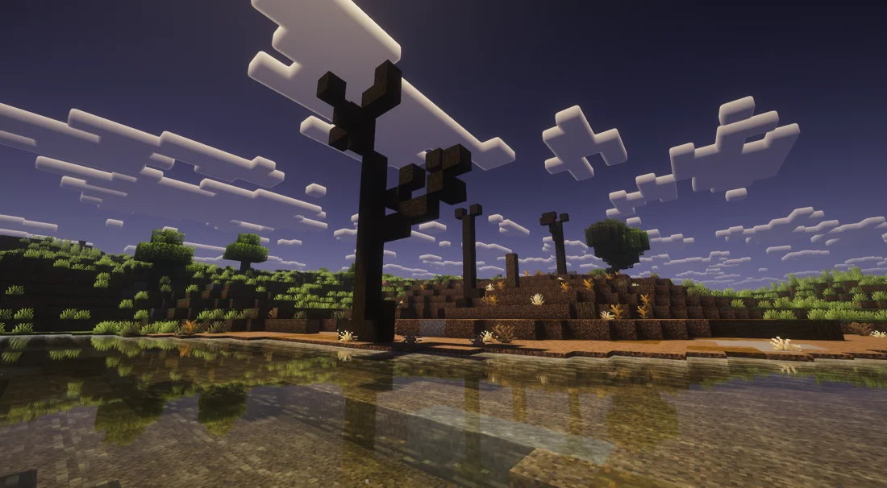
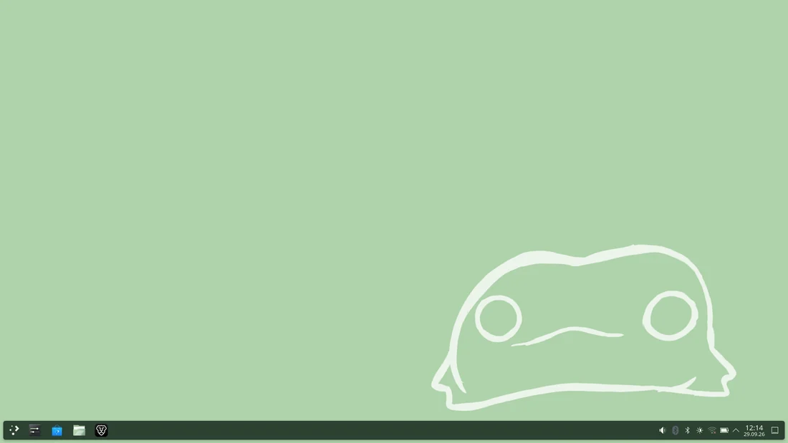
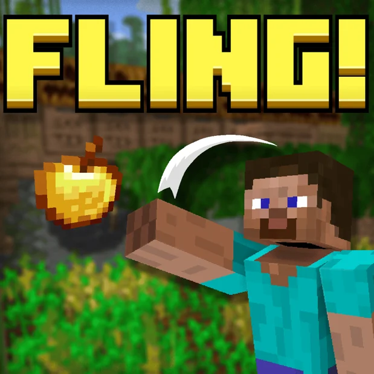

Nikita / MR-Kartoshki
I build things that probably shouldn’t exist.
Minecraft mods, Linux projects, and bad ideas taken too far.
About
I’m Nikita, an IT student in Vienna who mostly builds open-source software, Minecraft mods, and whatever idea sounds interesting enough to spend way too much time on. Projects usually start because something annoys me enough to fix it, or because someone says, ‘Wouldn’t it be funny if...?’
Projects
A few things I’m particularly proud of.


Fling
A Minecraft mod that lets you physically throw, catch and interact with dropped items.
Java · Fabric · Minecraft
Rawlands, project 1 of 3
Bad Apple, but...
Recreating the same video using increasingly inappropriate formats.
Bad Apple, but every frame is a valid QR code
Every individual frame is a fully scannable QR code that links back to that exact frame.
~2,600 QR codes · 12 FPS
Bad Apple, but it’s only Bézier curves
Each frame is reconstructed from a fixed set of Bézier curves approximating the original silhouette.
64 curves per frame
Bad Apple, but every frame is a valid Sudoku
Every frame is represented as a valid uniquely solvable Sudoku puzzle while still approximating the video.
Repositories
Public projects on GitHub.
Want to talk?
Find me on GitHub, Discord, or send me a direct message here.